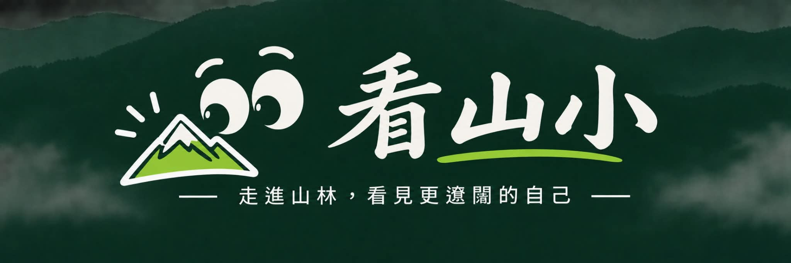

出發前了解路線、天氣、地形、交通及相關規定，並依照自身能力安排合適行程。
準備必要裝備與備用方案，降低迷途、受傷及對環境造成衝擊的風險。

山林帶給我們美麗的風景與珍貴的回憶， 而我們能回報山林的，就是減少每一次踏入所留下的影響。
點擊下方各項原則，了解如何實踐無痕山林。
出發前了解路線、天氣、地形、交通及相關規定，並依照自身能力安排合適行程。
準備必要裝備與備用方案，降低迷途、受傷及對環境造成衝擊的風險。
優先使用既有步道與合法營地，避免任意開闢捷徑或踩踏脆弱植被。
行經泥濘路段時，盡量走在原有步道上，不因繞路而擴大受破壞的範圍。
自己帶進山林的垃圾，包括食物包裝、衛生紙與廚餘，都應妥善帶下山。
排泄物及清洗廢水的處理方式，應依當地環境、管理規定與無痕山林指引執行，避免污染水源。
欣賞山林中的植物、岩石、歷史遺跡與自然景觀，但不要任意採集或破壞。
讓下一位登山者，也能看見同樣完整的山林樣貌。
優先使用登山爐具烹煮食物，並遵守當地用火規定。
避免任意生火，以降低森林火災、植被破壞及燃料採集造成的環境衝擊。
與野生動物保持適當距離，不餵食、不追逐，也不要為了拍照而干擾牠們。
妥善保存食物與垃圾，避免野生動物因接觸人類食物而改變自然習性。
在步道上禮讓其他山友，避免大聲喧嘩，尊重不同使用者的活動需求。
欣賞風景、拍照與休息時，也記得保留他人的通行空間與安靜體驗。
遠看是座山，近看山不小。 每一趟登山，除了挑戰自己， 也希望我們能讓山林保持原本的美好。